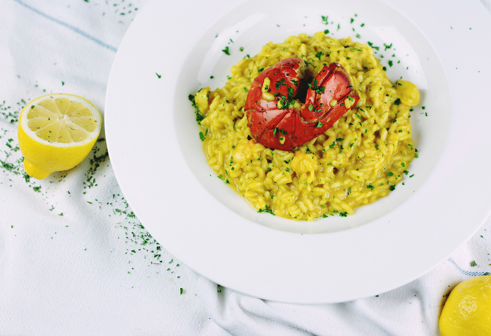

Spaghetti Carbonara
Creamy Roman pasta

Serves 4
Prep: 10 mins | Cook: 20 mins
Equipment and Tools
- Large pot for boiling pasta
- Large frying pan or skillet
- Mixing bowl
- Whisk
- Tongs or pasta spoon
- Grater for cheese
- Colander for draining pasta
Intredients list
- 200g spaghetti
- 100g pancetta
Step-by-Step Cooking Instructions
- Fill a large pot with water, add a generous pinch of salt, and bring it to a boil.
- Add the spaghetti and cook until al dente (about 8-10 minutes). Reserve 1 cup of pasta water before draining.
- In a mixing bowl, whisk together the eggs and grated Parmesan cheese until smooth.
- Heat a large skillet over medium heat and cook the diced pancetta until crispy. Remove excess grease if needed.
- Add minced garlic to the skillet with pancetta and sauté for 1 minute, being careful not to burn it.
- Turn the heat to low and add the drained spaghetti to the skillet. Toss to combine with pancetta.
- Remove the skillet from heat and pour the egg and cheese mixture over the pasta. Toss quickly to coat the pasta, allowing the residual heat to cook the eggs and create a creamy sauce.
- If the sauce is too thick, add a splash of the reserved pasta water to reach your desired consistency.
- Season with black pepper and garnish with fresh parsley if desired. Serve immediately.
Risotto alla Milanese
Saffron-infused creamy risotto

Serves 4
Prep: 15 mins | Cook: 25 mins
Equipment and Tools
- Medium saucepan
- Large skillet or sauté pan
- Wooden spoon
- Measuring cups
- Small bowl
Ingredients list
- 300g Arborio rice
- 1l chicken stock
- 1 pinch saffron threads
- 1 small onion, finely chopped
- 50g butter
Step-by-Step Cooking Instructions
- In a medium saucepan, warm the chicken stock over low heat. Add the saffron threads to infuse the stock.
- In a large skillet, melt half the butter over medium heat. Add the chopped onion and sauté until translucent.
- Add the Arborio rice to the skillet and toast for 2 minutes, stirring frequently, until the rice is lightly golden.
- Gradually add one ladle of the warm saffron-infused stock to the rice, stirring continuously until the liquid is absorbed.
- Repeat this process, adding stock one ladle at a time, until the rice is cooked and creamy (about 20 minutes).
Pizza Margherita
Classic Neapolitan pizza

Serves 2
Prep: 15 mins | Cook: 12 mins
Equipment and Tools
- Pizza stone or baking sheet
- Rolling pin
- Mixing bowl
- Pastry brush
- Oven
Ingredients list
- 250g pizza dough
- 150g San Marzano tomatoes
- 150g fresh mozzarella
- Fresh basil leaves
- Extra virgin olive oil
Step-by-Step Cooking Instructions
- Preheat the oven to 250°C (480°F) and place a pizza stone or baking sheet inside to heat up.
- Roll out the pizza dough on a floured surface to your desired thickness.
- Transfer the dough to a piece of parchment paper or a floured pizza peel.
- Spread the crushed San Marzano tomatoes evenly over the dough, leaving a small border around the edges.
- Add slices of mozzarella cheese on top of the tomato base.
- Carefully slide the pizza onto the preheated pizza stone or baking sheet and bake for 10-12 minutes until the crust is golden and the cheese is bubbly.
- Remove from the oven and garnish with fresh basil leaves and a drizzle of extra virgin olive oil before serving.